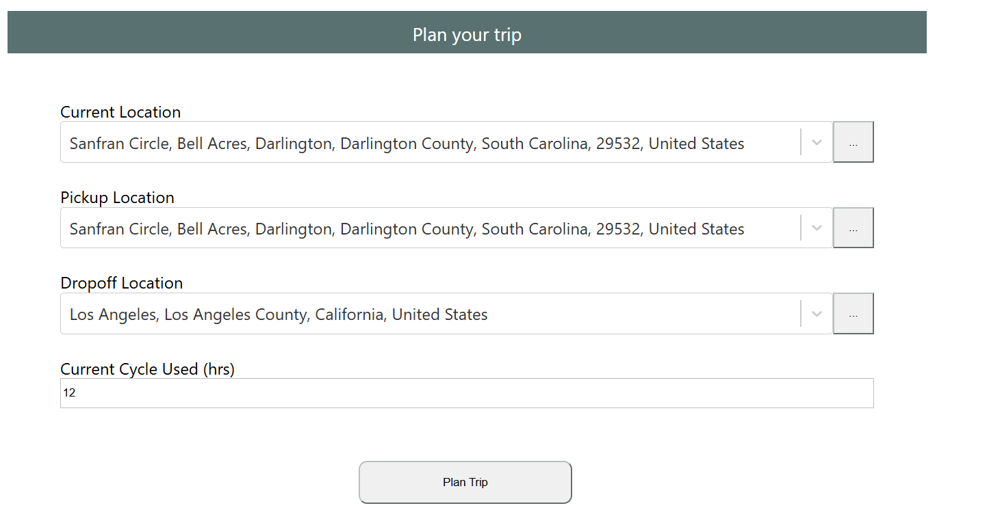
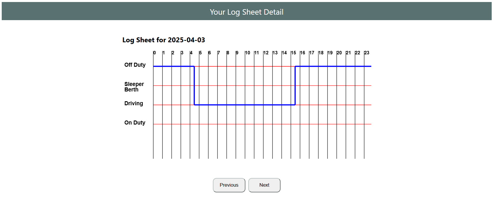

Trip Planner
Plan Your Trip
Introduction
Trip Planner
The Trip Planner is an intelligent travel and logistics management tool designed to streamline route planning and daily driver operations. It automates route optimization, ensuring the most efficient travel paths based on distance, traffic, and time constraints. In addition, it generates daily driver log sheets, helping transport managers and drivers maintain accurate records of trips, stops, and durations. Ideal for logistics companies, delivery services, and travel organizers, the Trip Planner enhances productivity, reduces fuel costs, and improves on-time performance through smart automation and real-time planning.
Assumptions
- Property-carrying driver, 70hrs/8days, no adverse driving conditions
- Fueling at least once every 1,000 miles
- 1 hour for pickup and drop-off
Features
Some of the features that are covered by the Trip Planner are described below in steps.
Route Optimization
Get route detail
One of the features of the trip planner is to optimize the route detail. Planning a trip can be exciting, but figuring out the best way to see everything you want while minimizing travel time and costs can quickly become a headache. That's where route optimization comes in. Think of it as the smart engine powering your trip planner, the behind-the-scenes wizard that takes your desired destinations and cleverly arranges them into the most efficient sequence. Instead of just listing your stops in the order you enter them, a route optimization algorithm considers factors like distances, traffic, opening hours, and even your preferred mode of transport to suggest a route that saves you precious time and energy.
Breaks, Gas Station
See your breaks & place of fuel fill up
One of the benefits that this Trip Planner provided is its comprehensive route to show breaks & gas stations. The route detail shows the place where you need to take a break.It also shows the gas station where you need to fuel up your car. These features are indicated by coffee cup & gas station icon in the route.
Log Sheet
draw the daily log sheet
In this part of the project, We have added the feature to draw the log sheet automatically. The Trip Planner includes a built-in log sheet system that automatically generates a daily driver log, capturing details such as start and end times, stop locations, total distance covered, and break durations. This helps drivers maintain compliance, simplifies reporting, and provides transparency for management. It eliminates the need for manual tracking and improves accuracy across daily operations.
Tools & frameworks
for the development of this project, Django and React Framework for backend and front end development respectively. Specifically, the following packes are are used in this project
- django: 5.1.7
- django-cors-headers: 4.7.0
- django-environ: 0.12.0
- djangorestframework: 3.15.2
- mysqlclient: 2.2.7
- PyMySQL: 1.1.1
- requests:2.32.3
- axios: 1.8.4,
- konva: 9.3.20,
- leaflet: 1.9.4,
- react: 19.1.0,
- react-dom: 19.1.0,
- react-konva: 19.0.3,
- react-leaflet: 5.0.0,
- react-router-dom: 7.4.1
- react-select: 5.10.1,
- yup: 1.6.1
Future Task
Due to the time & resource constraint, I haven't completed all part of the project. In the future I will add the following features
- Live GPS Tracking
- Live Alarm Notification